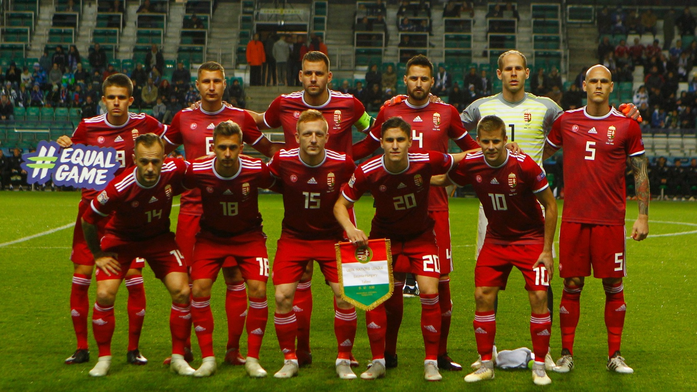

Futball története
A labda rúgásával kapcsolatos játékokat a történelem során számos országban játszották. A FIFA szerint „nagyon
kezdetleges volt a játéknak az a szakasza, amit Kínában gyakoroltak az i. e. 2. és az i. e. 3. évezredben (a játék
neve cuju volt)”.[3] Kínában, a népesség körében elterjedt kultikus jellegű labdajáték a tsu-küh („rúgni-labda”)
volt. Közép-Mexikóban az olmékok a tlacstli labdajátékot művelték egy tömör kaucsuklabdával. Az ókori Róma játéka, a
harpastum, egy rögbiféle játék volt, leginkább ez lehet a labdarúgás távoli elődje. A római légiók hódító útjukra
magukkal vitték a szőrrel bélelt felfújt hólyagot, a bőrlabdát. A labdajátékok számos variációját játszották a
középkori Európában, melynek különböző területein a szabályok nagymértékben eltérőek voltak. 1400 körül Firenzében a
calció labdajátékot játszották előírt szabályok mellett, rögzített méretű játéktéren. Az indiánok sportja, a
pasuckuakohowog, is a labdarúgás egyik elődjének mondható.
A modern szabályok alapjait a 19. század közepén akkor fektették le, amikor különválasztották a rögbit és a
futballt.

Szoboszlai
Neuer
- Michel Platini
- Maradona
- Johan Cruyff
- Ronaldo Nazário
- Marco Van Basten
- Alfredo Di Stéfano
- Ronaldo
- Ő lőtte a legtöbb gólt a világon.
- Messi
- Ő nyerte el a legtöbb trófeát a világon.